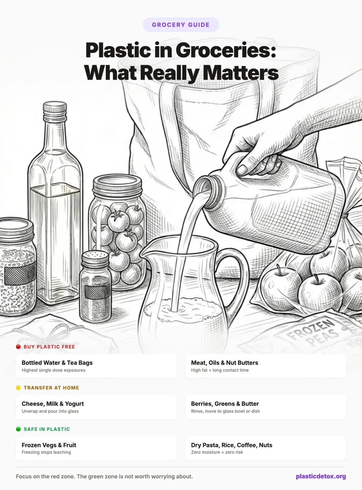

Plastic in Groceries: What Really Matters and What You Can Stop Worrying About (2026)
You cannot avoid all plastic at the grocery store. Meat comes on plastic trays. Cheese is vacuum sealed in plastic. Milk comes in plastic jugs. Salad greens live in plastic clamshells. Trying to buy everything plastic free is exhausting, expensive, and in many cases completely unnecessary.
Here is what most "plastic free" guides will not tell you: not all plastic contact with food is equally harmful. A banana in a plastic produce bag is fundamentally different from deli meat sitting on a polystyrene tray for five days. The science is clear on what factors drive chemical leaching, and once you understand them, you can focus your energy where it actually matters.
This guide breaks every common grocery item into three zones: what you should always try to buy plastic free, what is fine to buy in plastic but should be stored differently at home, and what is perfectly safe in plastic and not worth worrying about.

1. The Science: Why Some Foods Absorb More Plastic Than Others
Four factors determine how much a food absorbs from its plastic packaging. Understanding these is the key to knowing which groceries to worry about and which to ignore.
This is why a block of cheddar cheese vacuum sealed in plastic (high fat, long contact time, moderate pH) is a very different exposure than a bag of frozen peas (low fat, short effective contact time, neutral pH, frozen temperature).
When all four factors line up, the exposure is significant. When none of them apply, the exposure is negligible. Most grocery items fall somewhere in between, which is exactly why the three zone system works so well.
2. The Three Zone System
Based on the four leaching factors above, every common grocery item falls into one of three zones.
3. Red Zone: Always Buy Plastic Free
These are the grocery items where plastic packaging creates the highest chemical exposure. They hit multiple leaching factors: high fat, acidity, long contact time, or all three. Buying these plastic free, or switching brands, makes the biggest difference.
Meat and Seafood
Meat checks every box for high leaching. It is high in fat, mildly acidic (raw meat pH is typically 5.4 to 6.2), and sits in direct contact with polystyrene trays and PVC or polyethylene wrap for days. A 2022 study in Environmental Science and Technology found that protein foods in prolonged plastic contact had significantly elevated microplastic counts.
What to do:
- Buy from the butcher counter and ask for paper wrapping. Most butchers will wrap in butcher paper or wax paper on request. At Whole Foods, the butcher counter wraps in paper by default.
- If you must buy pre packaged meat, transfer it to a glass container immediately when you get home and discard the plastic tray.
- For seafood, buy fresh from the fish counter. Avoid pre packaged seafood sitting on absorbent pads in plastic trays.
- For storing at home, use Reynolds Butcher Paper to wrap meat before refrigerating or freezing. It is inexpensive, widely available, and does the job. For a cleaner option without bleached paper concerns, Beyond Gourmet Unbleached Parchment Paper is chlorine free and compostable.
Cooking Oils
Cooking oils are nearly 100% fat, which makes them highly efficient at absorbing plastic chemicals. Oil stored in a plastic bottle for months absorbs far more BPA and phthalates than water in the same bottle. A 2021 study found that vegetable oils in PET bottles contained measurable levels of phthalate esters that increased with storage time.
The brand that tested lowest was Kasandrinos, which uses ancient harvesting practices (handpicking olives, using burlap sacks instead of plastic bins) that minimize plastic contact throughout the entire production process. This is a case where the brand and its practices matter more than the packaging.
What to do:
- Always buy olive oil, avocado oil, and coconut oil in glass bottles. Glass is still better than plastic because it eliminates ongoing leaching during storage. But understand that the bottle is only part of the equation.
- Choose brands that are transparent about their production process. Kasandrinos has published full phthalate, bisphenol, pesticide, and heavy metal testing results for their oils. Look for brands that test and disclose rather than ones that just put "organic" on a glass bottle.
- Specific brands worth trying: Graza sells olive oil in glass bottles with a built in pour spout, so you do not even need a separate dispenser. California Olive Ranch is widely available in SoCal and most grocery stores, sold in glass, and well reviewed.
- Avoid the giant plastic jugs of vegetable oil or canola oil. Buy smaller glass bottles instead, or pour into glass when you get home.
Nut Butters
Peanut butter, almond butter, and other nut butters are nearly pure fat (typically 50% or higher), sit in plastic jars for months, and are often stirred or scooped repeatedly, increasing surface contact. This is one of the worst combinations for chemical absorption from plastic packaging.
What to do:
- Buy nut butters in glass jars. Many brands already sell in glass, including MaraNatha, Artisana, and most natural food store brands. The glass jar costs the same or just slightly more than the plastic equivalent.
- Grind your own. Many grocery stores (Whole Foods, Sprouts, natural food stores) have nut butter grinders where you can grind fresh peanut or almond butter directly into your own glass jar. This is often cheaper per ounce than pre packaged.
- If you do buy in plastic, transfer to a glass jar as soon as you get home. Wide mouth Mason jars are perfect for this.
Baby Food and Infant Formula
Babies and toddlers are disproportionately vulnerable to plastic chemicals because of their smaller body weight, developing endocrine systems, and higher intake relative to size. Studies have found that infants consuming food from plastic containers can ingest up to 16 million microplastic particles per day.
What to do:
- The gold standard is homemade baby food stored in glass. If you are doing baby led weaning (BLW) or making purees at home, store individual portions in WeeSprout glass baby food jars. They come in 4 oz and 8 oz sizes with measurement markings, and are freezer, microwave, and dishwasher safe. This gives you full control over both ingredients and containers.
- Pouches are not the same as glass jars. Plastic squeeze pouches with spouts are the highest exposure format for baby food. They are fine occasionally (travel, daycare emergencies), but should not be the daily default. For everyday feeding, glass jars are significantly safer.
- Never heat formula or baby food in plastic. Use glass bottles and glass storage containers exclusively.
- Read our full guide to microplastics in baby food for a complete breakdown of the safest feeding setup from newborn through toddler.
Tomato Products
Tomatoes are highly acidic (pH 4.3 to 4.9) and are often cooked before or during canning, which means they spend extended time in hot, acidic contact with can linings or plastic containers. Studies consistently show that canned tomatoes have some of the highest BPA levels of any grocery item.
What to do:
- Buy tomato passata, sauce, and crushed tomatoes in glass jars. Brands like Muir Glen, Rao's, and Bionaturae all sell in glass.
- Tomato paste in tubes (like Cento) uses aluminum lined tubes which are safer than cans for acidic foods.
- For fresh tomato sauce, buy fresh tomatoes (no packaging concern) and make your own. It freezes beautifully in glass jars.
Hot Prepared Foods
The rotisserie chicken in a plastic clamshell, the hot soup in a plastic deli container, the stir fry from the hot bar. Hot food in plastic is one of the highest exposure scenarios because heat dramatically accelerates chemical migration. A single hot meal in a polystyrene container can release tens of thousands of microplastic particles.
What to do:
- Rotisserie chicken is the most common offender. Remove it from the plastic clamshell immediately when you get home. Do not let it cool down inside the container. Transfer it to a plate, cutting board, or glass dish right away.
- Transfer any hot deli items (soup, stir fry, prepared meals) to glass, ceramic, or stainless steel as soon as possible. The longer hot food sits in plastic, the worse the exposure.
- For hot bar and salad bar items, bring your own stainless steel container. Many stores including Whole Foods allow this.
- If you are reheating deli food at home, never reheat it in the plastic container it came in. Transfer to glass or ceramic first. Our cookware guide covers the safest options for reheating and cooking.
Chocolate
Chocolate is 30 to 50% fat (cocoa butter), and most chocolate bars sit in direct contact with plastic inner wrappers for months on the shelf. The combination of high fat content and long contact time means chocolate readily absorbs plasticizers from its packaging. Dark chocolate tends to be higher in fat than milk chocolate.
What to do:
- Choose chocolate wrapped in foil only. Some brands wrap bars in aluminum foil without a plastic inner layer. Check before buying. Many premium and European chocolate brands use foil and paper rather than plastic.
- Chocolate sold in cardboard boxes (like truffles) with paper liners is also a better option than plastic wrapped bars.
- At home, store chocolate in glass jars or wrapped in foil. Do not leave it sitting in the original plastic wrapper long term.
4. Yellow Zone: Fine in Plastic, Transfer at Home
These items have moderate exposure risk. Buying them in plastic packaging is not a crisis, but you should not leave them sitting in the original packaging for extended periods at home. A simple transfer to glass or stainless steel when you unpack groceries dramatically reduces your exposure.
Cheese
Cheese is high in fat (often 25 to 35%), mildly acidic, and sits vacuum sealed in plastic for weeks or months. It is one of the higher risk items for chemical absorption. But the reality is that about 90% of cheese at the grocery store comes in plastic. Buying it completely plastic free is not realistic for most people, so the best strategy is to reduce contact time at home.
What to do:
- Unwrap and transfer as soon as you get home. Store cheese in a glass container, wrap it in Formaticum cheese storage paper, or use the Bee's Wrap Cheese Bundle which is specifically sized for wrapping cheese blocks. Bee's Wrap is made in Vermont from GOTS certified organic cotton, beeswax, organic jojoba oil, and tree resin. This cuts the contact time from weeks down to the trip home.
- Avoid pre shredded cheese in bags. Shredded cheese has massively more surface area in contact with plastic than a solid block. Buy blocks and grate them yourself.
- Look for cheese in wax or foil. Some European style cheeses (Brie, Gouda, aged Cheddar wheels) come coated in wax or wrapped in foil. Parmesan wedges are often wrapped in paper and foil.
- Buy from the deli counter when you can. Deli counter cheese can be wrapped in wax paper or parchment on request. Not every store will do it, but it is worth asking.
- Store cheese in Stasher silicone bags instead of plastic zip bags or cling wrap. Silicone does not leach chemicals into food and creates a good seal for cheese in the fridge.
Milk, Yogurt, and Cream
Dairy products are moderately fatty, which means they do absorb some chemicals from plastic containers. At refrigerator temperatures, the rate is slow but not zero. Milk that sits in a plastic jug for one to two weeks accumulates measurably more microplastics than milk consumed within a day or two of bottling.
Do not assume paper cartons are plastic free. Milk cartons that look like cardboard are actually lined with polyethylene plastic on the inside (and often the outside too). They have not been wax lined since the 1940s. Some paper cartons have also been found to contain PFAS in the coating. A paper carton is better than a plastic jug because the lining is thinner and contact area is smaller, but it is not truly plastic free. Glass is the only packaging that is genuinely zero plastic contact.
What to do:
- If you have access to milk in glass bottles, that is ideal. Alexandre Family Farm and Straus Family Creamery (widely available in SoCal and the West Coast) both sell in returnable glass bottles. Oberweis and many local dairies do the same. It costs more, but it is the safest option and you can often return the bottles for a deposit refund.
- If glass bottle milk is not in your budget, pour milk from the plastic jug into a glass pitcher when you get home. This is a simple swap that significantly reduces contact time.
- For yogurt, buy larger tubs rather than individual plastic cups. Transfer servings to glass bowls. Greek yogurt in glass jars (like Ellenos) is even better.
Butter
Butter is extremely high in fat (about 80%), which means it absorbs plasticizers readily. However, most butter is wrapped in wax coated paper or foil lined paper, not pure plastic. The bigger concern is butter that comes in plastic tubs (like spreads and margarine).
What to do:
- Choose butter wrapped in foil or wax paper over plastic tubs. European style butter often uses foil wrapping.
- Store butter at home in a glass or ceramic butter dish rather than keeping it in the original wrapper.
- Avoid margarine and butter spreads in plastic tubs entirely. The high fat content plus long shelf life means significant chemical absorption.
Berries, Grapes, and Soft Fruit
Soft skinned fruits like strawberries, raspberries, blueberries, and grapes have thin, permeable skins and are often slightly acidic. They sit in plastic clamshells from farm to store, and some of that contact does result in surface level microplastic transfer, especially when the fruit is wet or damaged.
What to do:
- Transfer berries to a glass bowl or a Hutzler Berry Keeper when you get home. The Hutzler has a built in colander so you can rinse berries directly in it, and its ventilated design keeps berries fresher longer than a sealed plastic clamshell.
- Rinse all berries under running water before eating. This removes surface microplastic particles.
- At farmers markets, bring your own cloth bags or baskets to avoid clamshells entirely.
Leafy Greens and Salad Mixes
Pre washed salad greens in plastic bags or clamshells have moderate exposure risk. The greens are wet (water increases chemical migration), have large surface areas, and sit in sealed plastic for days. However, the contact is surface level and much of it washes off.
What to do:
- Transfer to a glass container or salad spinner when you get home.
- Rinse greens thoroughly under running water before eating, even if the bag says "pre washed."
- Buy whole heads of lettuce instead of pre cut mixes when possible. Less processing means less plastic contact and longer shelf life.
Condiments and Sauces
Ketchup, mustard, mayonnaise, salad dressings, and soy sauce in plastic bottles sit at room temperature or in the fridge for months. The combination of acidity (vinegar based condiments), fat content (mayo, ranch, dressings), and long storage time means they do accumulate plastic chemicals over time.
What to do:
- Many great condiments already come in glass. Primal Kitchen dressings (avocado oil based, clean ingredients, glass jars) are a standout for salad dressings. Maille Dijon mustard comes in a glass jar. Bragg apple cider vinegar has always been sold in glass and is a staple in the low tox space.
- Soy sauce brands like Kikkoman are widely available in glass bottles.
- For mayo, buy in glass jars or transfer from plastic squeeze bottles into glass jars at home.
Sliced Bread
Bread is low in fat and not acidic, so the leaching risk is lower than dairy or meat. However, most sliced bread comes in plastic bags and sits in them for days. The surface contact does result in some microplastic transfer, especially if the bread is soft and moist.
What to do:
- Buy from bakeries that use paper bags when possible.
- At home, transfer bread to a bread box or wrap in a linen bread bag.
- This is a lower priority swap. If you are still working on red zone items, this can wait.
Coffee Beans and Ground Coffee
Most coffee bags have a plastic inner lining (usually polyethylene or polypropylene) to keep the beans fresh. Coffee beans contain natural oils (12 to 16% fat), and ground coffee has even more surface area exposed to the plastic lining. The one way valve on most bags is also plastic. Over weeks on the shelf, those oils absorb chemicals from the liner.
What to do:
- Transfer coffee to a glass or stainless steel canister as soon as you open the bag. This is a quick win that also keeps your coffee fresher.
- Buy from local roasters who sell in paper bags without plastic liners when possible.
- If you use whole beans, the exposure is lower than pre ground because of less surface area in contact with the bag. Read our full plastic free coffee guide for brewing tips too.
Protein Powder
Protein powder is a high consumption product that sits in large plastic tubs for months. While it is a dry powder (low moisture means less leaching), the sheer volume consumed by regular users and the long storage time add up. Some protein powders also contain fats from added oils or nut butters, which increases absorption.
What to do:
- Transfer to a large glass jar as soon as you open the tub. Wide mouth half gallon Mason jars work well for this.
- Look for brands that sell in paper or cardboard packaging. Some clean supplement brands are starting to move away from plastic tubs.
- This is a moderate priority. If you use protein powder daily, the cumulative exposure over months justifies the transfer. If you use it occasionally, it is lower concern.
Wine and Juice in Cartons
Tetra Pak and similar cartons look like cardboard but are lined with polyethylene plastic on the inside, similar to milk cartons. Wine and juice are acidic, which accelerates leaching from the plastic lining. Boxed wine has an additional concern: the wine sits in a plastic bladder inside the box for weeks or months.
What to do:
- Buy wine in glass bottles whenever possible. Glass is the standard for wine and widely available at every price point.
- For juice, buy in glass bottles or squeeze your own. Glass bottled orange juice and apple juice are available at most grocery stores.
- If you do buy carton juice, pour it into a glass pitcher at home rather than drinking directly from the carton over several days.
5. Green Zone: Safe in Plastic
These items have negligible plastic exposure risk. Spending time, money, or mental energy trying to buy them plastic free is not a good use of your effort. Focus on the red and yellow zones first.
🍌 Bananas, Avocados, Oranges, Melons
Thick peels create a natural barrier between plastic and the food you eat. The brief contact between a produce bag and the peel is negligible. You peel and discard the exterior.
🥦 Frozen Vegetables
Freezing temperatures virtually stop chemical leaching. Frozen broccoli, peas, corn, and green beans in plastic bags are among the lowest concern grocery items. Just do not reheat them in the bag.
🍝 Dry Pasta and Rice
Zero moisture, zero fat, zero acidity. Dry goods in plastic bags or boxes have essentially zero chemical migration. Store them in the original packaging without concern.
🥜 Nuts and Seeds in Bags
While nuts contain natural fats, they are dry with virtually zero moisture. Chemical migration from plastic requires moisture or liquid as a transfer medium, so dry nuts in a bag at room temperature result in negligible exposure.
🥣 Cereal and Granola
Dry, low fat, and often in an inner bag that is separate from the box. This is one of the lowest risk grocery items for plastic exposure. Do not bother transferring to glass.
🫘 Dried Beans and Lentils
Completely dry, zero fat, neutral pH. Even if stored in plastic for months, leaching is essentially zero. These are among the safest foods in plastic packaging.
🧅 Onions, Garlic, Potatoes
Thick natural skins, low moisture, neutral pH. The plastic mesh or bag has negligible contact with the part you eat. Low priority for plastic free swaps.
🌿 Spices and Dried Herbs
Despite long shelf times in plastic jars, spices are completely dry with zero fat and zero moisture. Chemical migration requires a liquid or fat medium, so dry spices in plastic jars are negligible risk. Transfer to glass if you want, but it is cosmetic, not safety driven.
❄️ Frozen Fruit
Like frozen vegetables, the freezing temperature stops leaching. Frozen berries and mango chunks in plastic bags are safe. Transfer to a glass container before thawing if you want extra protection.
Bottom line: If a food is dry, frozen, or has a thick peel you remove before eating, the plastic packaging is not a meaningful exposure route. The exception is frozen meat and seafood (see the red zone section above), which should be treated differently because of their fat content. Save your energy for the red zone items.
Foods Contaminated Before Packaging: Sea Salt and Honey
Some foods have high microplastic levels that have nothing to do with their packaging. The contamination happens in the environment before the food is ever harvested or bottled.
- Sea salt contains up to 600 microplastic particles per kilogram. The particles come from ocean pollution, not from the salt container. Switching from a plastic salt shaker to a glass one will not help. The microplastics are in the salt itself. What to do: Use mined salt (like Himalayan pink salt or Redmond Real Salt) instead of sea salt. Mined salt comes from ancient underground deposits that predate plastic pollution.
- Honey has been found to contain significant microplastic contamination, likely from bees collecting particles in the environment and from processing equipment. The packaging (glass vs. plastic) matters less than the source. What to do: Buy from local beekeepers who use minimal processing. Raw, unfiltered honey from small producers generally has lower contamination than mass produced brands. Store in the glass jar it comes in, or transfer from plastic squeeze bottles to glass.
| Food | Repack Into | Tip |
|---|---|---|
| Meat/fish (whole cuts) | Ball Mason Jars (32 oz) | Leave an inch of headspace for freezing |
| Meat/fish (individual pieces) | Parchment lined sheet pan, then jar | Pre freeze 1 to 2 hours so pieces do not stick together |
| Cheese | Bee's Wrap or Formaticum paper | Unwrap from plastic immediately when home |
| Milk | Glass pitcher | Pour from plastic jug as soon as you unpack |
| Yogurt | Glass bowls or jars | Buy large tubs, transfer servings to glass |
| Butter | Glass or ceramic butter dish | Avoid margarine in plastic tubs entirely |
| Berries and soft fruit | Hutzler Berry Keeper or glass bowl | Rinse under water first to remove surface particles |
| Leafy greens | Glass container or salad spinner | Rinse even if bag says "pre washed" |
| Condiments | Buy in glass (Primal Kitchen, Bragg, Maille) | Transfer from plastic squeeze bottles to glass jars |
| Bread | Linen bread bag or bread box | Buy from bakeries in paper bags when possible |
| Coffee | Glass or stainless steel canister | Transfer as soon as you open the bag |
| Protein powder | Wide mouth half gallon Mason jar | Transfer from plastic tub on day one |
The goal is not perfection. Just getting food out of plastic packaging and into glass, stainless steel, or paper within a few hours of arriving home eliminates the majority of ongoing exposure.
6. The Canned Food Problem
Canned food deserves its own section because it confuses people. Cans look like metal, but almost all cans have an interior plastic lining made from epoxy resin. Most of these linings contain BPA or its substitutes (BPS, BPF), which are structurally similar endocrine disruptors.
The pattern is clear: acidic canned foods have dramatically higher BPA levels than non acidic ones. Tomato based products are the worst offenders because the combination of high acidity and heat processing causes maximum leaching from can linings.
What to Do About Canned Foods
- Switch canned tomatoes to glass. This is the single highest impact canned food swap. Brands like Muir Glen, Jovial, and Bionaturae sell crushed tomatoes, diced tomatoes, and passata in glass jars.
- Switch canned soup to boxed or homemade. Boxed soups (like Pacific Foods in cartons) use a different liner that is generally BPA free. Better yet, make your own soup and freeze in glass freezer jars.
- For beans, choose brands with BPA free linings. Eden Foods was one of the first brands to switch to BPA free can linings and clearly labels their cans. Amy's Kitchen and 365 by Whole Foods also use BPA free linings.
- For tuna and fish, look for glass jarred options. Brands like Tonnino and Wild Planet offer tuna in glass jars. Or choose pouches over cans, as foil pouches generally have lower BPA exposure than cans.
- Non acidic canned vegetables (corn, green beans, peas) have much lower BPA levels and are lower priority for swapping.
7. Bottled Water and Beverages
Bottled water in plastic is one of the most studied sources of microplastic contamination. A landmark 2018 study tested 259 bottles from 11 brands across nine countries and found that 93% of bottled water contained microplastic contamination, averaging 325 particles per liter. Some bottles contained over 10,000 particles per liter.
| Beverage Container | Microplastic Risk | Better Alternative |
|---|---|---|
| Plastic water bottle (single use) | Very high (325+ particles/L) | Filtered tap in glass or steel |
| Plastic water bottle (reusable, warm car) | Extreme (heat + time) | Stainless steel bottle |
| Juice in plastic bottle | High (acidic + plastic) | Glass bottle or fresh squeeze |
| Soda in plastic bottle | Moderate (acidic, carbonated) | Cans or glass bottles |
| Water in carton (Tetra Pak) | Low to moderate | Acceptable alternative |
| Water in glass bottle | Negligible | Best store option |
| Filtered tap water at home | Lowest (with good filter) | Best overall option |
The best solution for water is not buying a different bottle. It is filtering your tap water at home and carrying a reusable stainless steel or glass bottle.
- LifeStraw Home Glass Pitcher is the only pitcher certified to NSF 244, the specific standard for microplastic reduction. The glass body means your filter is not recontaminating your water through its own plastic housing. This is our top pick.
- Clearly Filtered Pitcher is independently tested against 365+ contaminants including microplastics, PFAS, lead, and fluoride. Well regarded and more affordable. The pitcher body is BPA free Tritan plastic.
- AquaTru Carafe is the premium countertop pick. It uses 4 stage reverse osmosis with a glass collection carafe, removing 84 certified contaminants including microplastics and PFAS. No plumbing needed.
Read our complete water filter guide for a full comparison.
8. Smart Grocery Shopping: A Store by Store Guide
Where you shop matters almost as much as what you buy. Some stores make plastic free shopping easy. Others make it nearly impossible. Here is how to navigate the most common options.
Whole Foods Market
Best for: Paper wrapped meat and seafood, glass jar products, bulk bins, BPA free canned goods.
- Butcher counter wraps in paper by default. Ask for no plastic tray.
- Extensive bulk bin section for grains, nuts, dried fruit, spices, and oils. Bring your own glass jars or cloth bags.
- 365 brand canned beans use BPA free linings.
- Large selection of condiments, sauces, and spreads in glass jars.
- Hot bar allows you to bring your own container in most locations.
Trader Joe's
Best for: Affordable glass jar options, good cheese counter, reasonable prices.
- Cheese can be bought from the deli counter and wrapped in paper on request.
- Many sauces, salsas, and condiments come in glass jars at competitive prices.
- Olive oils are typically sold in glass bottles.
- Watch out for: Heavy plastic packaging on produce, pre packaged meats, and their popular frozen meals in plastic trays.
- Best strategy for TJ's regulars: Stick to their glass jar sauces, olives, pickles, and oils. Buy your produce and meat elsewhere (or at a farmers market) and use TJ's for what they do well in glass and paper packaging.
Local Farmers Markets
Best for: Truly plastic free produce, eggs in paper cartons, paper wrapped meats and cheeses, and building relationships with producers.
- Bring your own canvas bags, cloth produce bags, and glass jars.
- Meat vendors often wrap in butcher paper. Cheese vendors will cut and wrap in wax paper.
- Eggs are available in paper or cardboard cartons.
- Fresh produce has zero plastic packaging.
Conventional Grocery Stores (Kroger, Safeway, Publix, etc.)
Best for: Convenience. These stores are harder for plastic free shopping but not impossible.
- Use the butcher counter instead of pre packaged meat. Most will wrap in paper on request.
- Buy cooking oils in glass bottles (most olive oils already come in glass).
- Choose canned beans from BPA free brands available in most conventional stores.
- Buy milk in cartons (half gallon paper cartons) instead of plastic jugs when available.
- Use reusable mesh produce bags for fruits and vegetables.
Online Grocery (Amazon Fresh, Thrive Market)
Best for: Ordering glass jarred shelf stable items in bulk, finding specialty BPA free brands.
- Thrive Market specializes in clean, organic products, many in glass packaging. Their online store makes it easy to filter by packaging type.
- Order glass jarred tomatoes, BPA free canned beans, and glass bottled oils in bulk to save money.
- Compare packaging materials before ordering. Product photos often clearly show if a container is glass or plastic.
9. Best Plastic Free Storage for When You Get Home
Even if you cannot buy everything plastic free at the store, transferring food to safe containers at home is the next best thing. Here is what you need.
A set of glass food storage containers is the single most useful purchase for reducing plastic in your kitchen. Use them for leftovers, meal prep, transferred dairy, and anything you would normally put in a plastic container.
Urban Green Glass with Glass Lids (3 Pack)
Borosilicate glass containers with glass lids. 100% plastic free so nothing touches your food except glass. Microwave and dishwasher safe.
View on Amazon →Glass Containers with Bamboo Lids (4 Pack)
Borosilicate glass with bamboo lids that double as small cutting boards. Oven and microwave safe. Natural and completely plastic free.
View on Amazon →Mason jars are the most versatile and affordable glass storage option. Use them for everything from dry pantry goods to refrigerated sauces to freezer soups.
Ball Mason Jars (Versatile Classic)
Available in every size from 4 oz to 64 oz. Wide mouth versions are easier to fill and clean. Perfect for storing transferred milk, sauces, grains, and homemade broths.
View on Amazon →Weck Canning Jars (Elegant Option)
European glass jars with glass lids and rubber gaskets (no metal or plastic). Beautiful enough to serve from. Available in tulip, mold, and straight sided shapes.
View on Amazon →Reusable Mesh Produce Bags
Lightweight, washable bags for fruits and vegetables. Replace the thin plastic bags at the produce section. Most stores accept them without issue.
View on Amazon →Bee's Wrap Beeswax Wraps
The gold standard beeswax wrap. Made in Vermont from GOTS certified organic cotton, beeswax, organic jojoba oil, and tree resin. Lasts up to a year with proper care.
View on Amazon →Abeego Beeswax Wraps
Abeego invented the modern beeswax food wrap in 2008. Their breathable design keeps food fresh by letting it breathe rather than suffocating it. Handcrafted in Canada.
View on Amazon →Best for lunches, kids, and on the go food. Unbreakable and lightweight compared to glass.
PlanetBox Rover (Best for Kids)
The go to stainless steel bento for families. Five smart compartments, 18/8 stainless steel with 46% recycled content, dishwasher safe, and includes leak proof dippers. Completely free of BPA, phthalates, and lead.
View on Amazon →ECOlunchbox Three in One
Nesting stainless steel containers that stack for easy carrying. Great for adults who want portion controlled, plastic free lunch packing. 100% stainless steel, nothing else touches your food.
View on Amazon →10. Doing This on a Budget
Switching to plastic free groceries does not have to be expensive. In fact, some of the best swaps save you money in the long run. Here is how to prioritize when you are on a tight budget.
- Ask the butcher for paper wrapping. Same meat, same price, no plastic tray. You just have to ask.
- Buy cheese from the deli counter and request wax paper wrapping instead of grabbing the pre packaged block.
- Transfer food to dishes you already own. You do not need to buy new glass containers. Plates, bowls, and any glass jars you have (cleaned pasta sauce jars, pickle jars) work perfectly.
- Rinse produce under running water before eating to remove surface microplastics.
- Stop microwaving in plastic. Use a plate or ceramic bowl instead. You already own these.
- A set of Mason jars (about $10 for a dozen). Use for storing transferred milk, sauces, grains, and leftovers.
- Reusable produce bags (about $8 to $12 for a set). Replace plastic produce bags forever.
- Switch to glass bottled olive oil. Many glass bottled olive oils cost the same as plastic. It is purely a brand choice, not a premium.
- Buy tomato passata in glass jars instead of canned crushed tomatoes. Often the same price.
- A water filter pitcher ($30 to $70). Eliminates the need to buy bottled water, saving you hundreds of dollars per year while removing microplastics from your drinking water.
- A set of glass food storage containers ($25 to $40 for a starter set). Replaces plastic containers for leftovers and meal prep. Glass lasts essentially forever.
- A stainless steel water bottle ($15 to $30). Replaces hundreds of single use plastic bottles per year.
- Beeswax wraps ($12 to $18 for a set). Replace plastic wrap for a year or more before needing refreshing.
11. FAQ
Yes. Meat is one of the highest risk foods for microplastic absorption from packaging. It is high in fat, often acidic, and sits in direct contact with plastic wrap or trays for days. A 2022 study in Environmental Science and Technology found that protein rich foods in direct contact with plastic packaging contained significantly higher microplastic counts than dry or whole produce items. Buy from the butcher counter in paper wrapping, or transfer to glass or stainless steel as soon as you get home.
Milk in HDPE plastic jugs at refrigerator temperatures has relatively low leaching compared to hot or acidic foods. However, milk is fatty, which increases chemical absorption over time. If you have access to milk in glass bottles from local dairies, that is the safer option. If not, buying in plastic and transferring to a glass pitcher at home is a practical compromise.
Not necessarily. Most canned foods have an interior lining made from epoxy resin that contains BPA or its substitutes like BPS. Acidic canned foods like tomatoes, citrus, and soups leach more BPA from these linings. Look for brands that use BPA free can linings, or choose foods in glass jars instead. Brands like Eden Foods, Muir Glen, and Amy's use BPA free linings for many of their products.
For whole produce with thick skins like bananas, avocados, oranges, and melons, the brief contact with a thin plastic bag is negligible. The peel acts as a barrier and you do not eat it. For thin skinned produce like berries, leafy greens, and tomatoes, reusable mesh or cotton produce bags are a better choice since these foods may absorb small amounts of chemicals from direct plastic contact, especially if they are wet or slightly acidic.
Freezing dramatically slows chemical leaching from plastic. At freezer temperatures, microplastic particle release and chemical migration are minimal. Frozen vegetables, fruits, and grains in plastic bags are among the lowest concern grocery items. The bigger risk is reheating them in the same plastic bag. Always transfer frozen food to glass or ceramic before microwaving or cooking.
Yes. Rinsing produce under running water removes surface microplastic particles that may have transferred from packaging. For firmer produce, a gentle scrub with a natural fiber brush is even more effective. While this does not remove chemicals that have already been absorbed into the food, it reduces surface contamination significantly.
Based on current research, the grocery items with the highest measured microplastic contamination include: sea salt (up to 600 particles per kilogram), bottled water in plastic (up to 325 particles per liter), shellfish and seafood, honey, beer, sugar, and processed meats stored in direct contact with plastic. Fresh produce with intact peels and dry packaged goods like rice and pasta tend to have the lowest contamination levels.
Organic certification does not address plastic packaging. However, stores like Whole Foods tend to offer more bulk bin options, glass jar products, and paper wrapped alternatives. The key advantage is having more plastic free options available, not that the plastic they do use is any different from conventional stores.
Related Articles
- Best Plastic Free Food Storage Containers (2026)
Compare glass, stainless steel, and silicone containers for safer food storage at home. - How to Remove Microplastics from Drinking Water (2026)
Your tap water contains thousands of microplastic particles per liter. Learn which filters actually work. - How to Start Reducing Plastic Exposure: A Practical Priority Guide (2026)
A step by step framework for reducing microplastic exposure, starting with what matters most. - How to Avoid BPA and Phthalates in Everyday Products (2026)
A room by room guide to eliminating endocrine disruptors from your home. - Microplastics in Baby Food: What Parents Need to Know (2026)
Babies consume up to 16 million microplastic particles per day from bottles alone. Learn how to set up the safest feeding system.